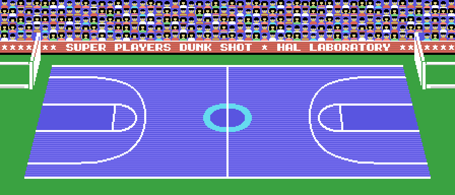
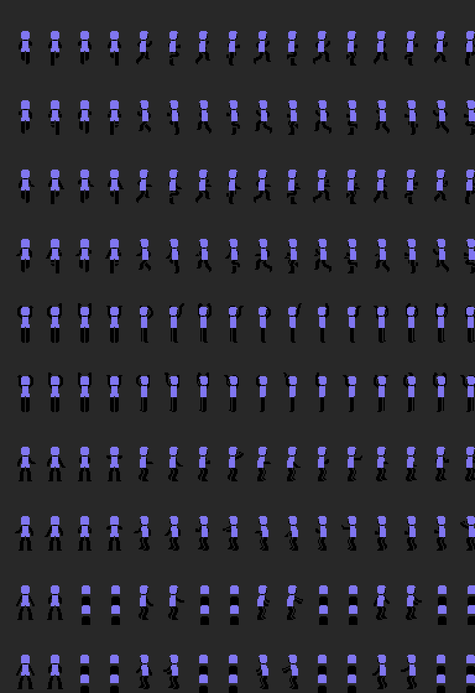
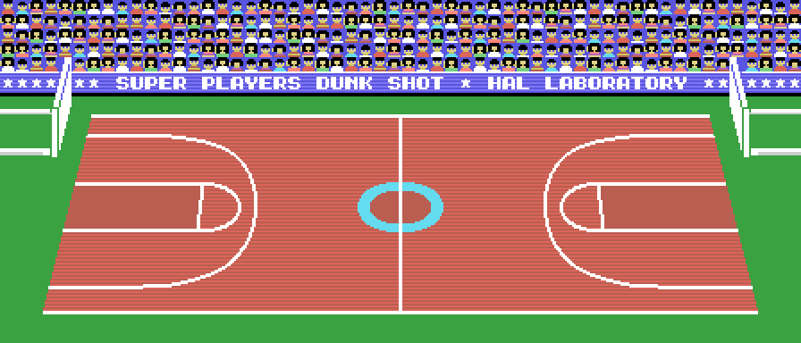

Lo que no se ve jugando, con la dirección donde está y cómo se midió.
Toda la pista, con las gradas y la pancarta SUPER PLAYERS DUNK SHOT * HAL LABORATORY, es un mapa de 56 × 24 patrones comprimido en 0xB69E (714 bytes que dan 1.344). No hay desplazamiento por hardware: 0x5F33 copia a la tabla de nombres, fila a fila, las 32 columnas que empiezan en la de 0xE830 (de la 0 a la 24), y 0x5E7C la mueve de columna en columna cuando el balón cruza el centro. El marcador de 21 × 4 (0x77AB) va encima, en la columna 6.

Medido montando la ventana en la columna 12 y cotejándola con dos volcados del partido: 0 diferencias en nombres, patrones y colores.
Pelo, piel de arriba, camiseta y piel de abajo: cuatro sprites de 16 × 16 por jugador, seis jugadores, más la red, el balón, su sombra y la flecha. El TMS9918 solo pinta cuatro sprites por línea, así que 0x5C0B monta los siete grupos en un orden que cambia cada cuadro, 0x5BAB los copia también al revés y los dos órdenes van a dos tablas de atributos (0x1B00 y 0x1F00) que el registro 5 alterna (0x5B77). El parpadeo está programado a propósito.
En los volcados, los 24 sprites de jugador aparecen en orden distinto en las dos tablas, y la que se ve es la que dice el bit 2 del registro 5.
Una pose son cuatro números de patrón (0xA4CE) y cuatro desplazamientos (0xA38E, uno por grupo de cuatro poses) que 0x5C40 resta de la posición de los pies; los 196 patrones viven en RAM, descomprimidos de 0x9725, 0x9B08, 0x9F80 y 0xA360. El aspecto de cada jugador es una de las 32 parejas de 0x80E4 (piel 0x0B, 0x0A o 0x01 y once colores de pelo) y la camiseta es el color del equipo (0xEA2C/0xEA5C).

Pose, patrones y colores están cotejados en los seis jugadores de dos volcados de openMSX: para cada uno, los cuatro sprites de la tabla de atributos dan la misma posición de los pies al sumarles sus desplazamientos, llevan los colores piel-piel-pelo-camiseta y sus patrones en la VRAM son los de la pose.
ELM, JNR, HIG, COL, YUG, ESP, USA y PRO no son plantillas guardadas: son los niveles 1 a 8. Al elegir uno, 0x72CA genera ocho jugadores con 30, 20 y 25 puntos de habilidad más 30 por cada nivel por encima del primero, y un aspecto al azar sacado del registro R del Z80. El nombre se copia de la lista de 0x7CA1 y el nivel se guarda en el byte 3 del equipo.
SAVE DATA escribe con la BIOS de casete el bloque del equipo (0xEC bytes: nombre, nivel, color y ocho jugadores de 29) con la cabecera de los binarios, diez 0xD0, y un nombre de seis letras: las tres del equipo y tres 0x7F (0x8C33). LOAD DATA lo busca y lo lee (0x8C71) y VERIFY lo compara byte a byte (0x8C87). Sin cinta, el mensaje es ERROR!
COLOR OF COURT elige entre tres tablas de color comprimidas (0xABA8, 0xACB0 y 0xADB8: 264 bytes cada una, 2.000 al descomprimir) para los mismos 250 patrones. Verde, azul y roja; las gradas y la pancarta no cambian.

La tabla de 720 bytes de 0xAF5F son cinco formaciones con seis variantes cada una, y en cada variante un guion de ocho bytes por jugador: una espera y puntos (Y, X, código) hasta un 0x80. 0x6F48 elige la variante con la formación en curso y un bit al azar, y el botón 2 del equipo con balón en campo contrario pasa a la siguiente.
Tres patrones de la pista (0x73, 0x85 y 0x86) y la E y la S de un ESC del juego de patrones del logotipo (0xFB, 0xFC) no salen nunca; la C (0xFD) sí, en el título. Un patrón de sprite, el 195, no lo usa ninguna pose.
Y diecisiete trozos de código a los que no se llega: entradas alternativas, un contador de cinco cifras (0x7AAE) y una rutina que escribe un cero en la propia ROM (0x8B3C), de cuando el programa corría en RAM.
En 0x4EEC, además, todo apunta a un fallo del original: carga ld hl,(0xE6DF) donde el código vecino hace pensar en ld hl,0xE6DF, y compara y escribe en la dirección que forman «quién tiró» y «saltador izquierdo», que al arrancar es 0xFFFF. Lo que hace está medido en el listado; lo que debía hacer, no.